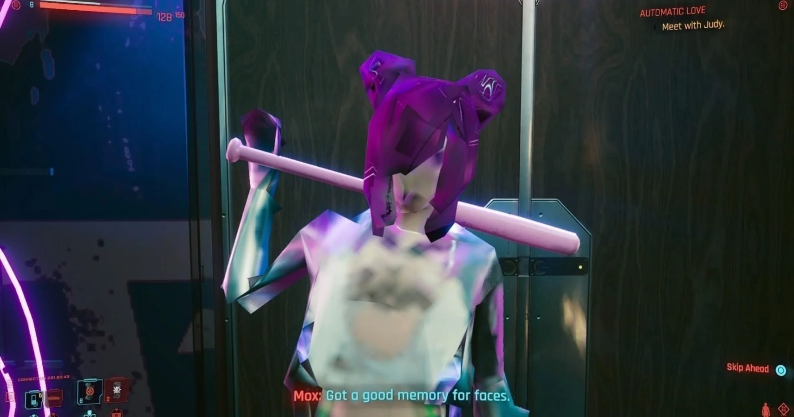

By Dylan Burke
Published: 10/10/2021
Back when games were still a new thing they came out fully formed, what you bought was all you were going to get, so the developer had better released a fully complete game, or people were not going to buy and like their game. Now games are coming out not even feature complete, and this is having a terrible impact on the industry on the whole.
Take the release of Cyberpunk 2077. That game was probably the most anticipated game of the decade (having been teased all the way back in 2012). The game had promised a giant sprawling city, with an real life feel from the NPC inhabitants, a realistic day/night cycle, branching dialogue, and so much more. What we got was a badly optimized and buggy mess that could be considered unplayable to some. Here is just one example of the many bugs:

Doesn't look like polygons were in the budget
As to the story and gameplay features like different backgrounds that affect your character or branching dialogue that allows for replayability, wellthose were also not fully realized as well. The different backgrounds barley affect gameplay and the way people treat you, and the different dialogue options don't offer very much difference between each other.
It is game releases like this and the many others like it that have left a bad taste in consumers mouths' and lead to abysmal player populations after launch, and the worsening of gimmicks that try to keep player retention. I wish we could go back to the days of games coming out fully complete and extra content being a bonus that increased the quality of the game, instead of fixing the game to where it should have been.